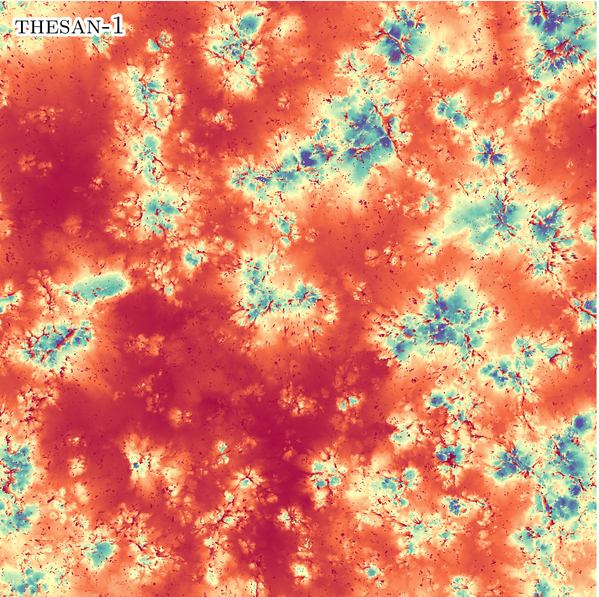
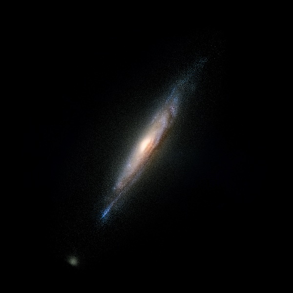
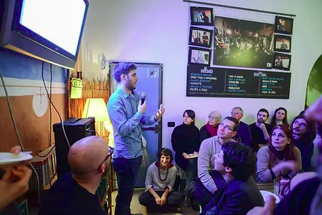

I am a Project Assistant Professor at the Kavli Institute for the Physics and Mathematics of the Universe in Tokyo (Japan).
I develop and use numerical simulations to study the formation of structures in the Universe. I mainly focus my efforts on the first billion years of the Universe and the Epoch of Reionization.
I am often involved in outreach initiatives, either as speaker or as organizer.
About me
I was born in 1990 in Modena, a medium-sized (in the italian gauge) city in the northern part of Italy. You may have heard of Modena as
it is the hometown of Ferrari, Aceto Balsamico, Luciano Pavarotti, Tortellini and houses one of the best restaurant in the World.
I obtained my Bachelor in Physics at the University of Modena and Reggio Emilia (Italy) in 2012, with
a thesis on numerical simulations of molecular systems. Then, I obtained my Master in Theoretical Physics at the
University of Bologna (Italy) in 2014, working on numerical simulations of non-standard cosmologies
as thesis project. I got my Ph.D. in astrophysics at the Argelander Institut fuer Astronomie of
Bonn University (Germany).
Between 2018 and 2023, I was a Research Fellow at the Max-Planck-Institut fuer Astrophysik
in Garching (Germany) and then at the Institute for Fundamental Physics of the Universe
in Trieste (Italy), as well as a CANON Fellow at the
University of Osaka.
Currently I am a Project Assistant Professor at the Kavli Institute for the Physics and Mathematics of the Universe in Tokyo (Japan).
I owe my deep love for Physics, Astronomy and science in general mainly to Margherita Hack
and my uncle Andrea. I'm passionate about good food, rugby and role playing games.
Research
I am a numerical astrophysicist. I develop advanced numerical cosmological simulations, that I run in the largest supercomputers in the world. Thanks to them, I study the formation, evolution and impact of different structures in the Universe.
The first billion years of the Universe
I spend most of my time studying the formation of the first stars and galaxies and the unique conditions of the inter-galactic gas between
them during the first billion years of the Universe. These primeval structure are responsible for the process known as Cosmic Reionization,
where ionizing photons forever transformed the surrounding gas.
Throughout my career I have investigated the role of different sources in the reionization process, the physical conditions and observability
of the inter-galactic gas, and the production of magnetic fields around the first galaxies. I have also developed
Thesan, one of the most advanced simulations of the first billion years of the Universe,
that has been widely used to study this period of time.
Galaxy formation
I am also working on the formation of galaxies after the first billion years of the Universe. This is an extremely compex problem, where a wide range of physical phenomena intertwine. I have studied the impact of galactic environment on the formation of galaxies, their properties and on the dynamics of their satellites. I have also investigated the impact of different mechanisms to produce magnetic fields on their evolution.
Cosmology
I used numerical simulations to explore a new cosmological model and its impact on galaxies. I also designed a new test to tell apart the standard cosmological model and the alternative Modified Newtonian Dynamics.
Code development
I routinely develop algorithms for numerical simulations, in order to both improve the physical fidelity or performance of the codes. Recently, I developed a new approach (called Dynamic Zoom Simulations) to speed up by 10x large cosmological simulations tailored to the production of lightcones.
Outreach
I believe outreach is a crucial part of the life of a scientist, since science is a global effort and it ought to be shared with the broader public.
I have been active in this since the beginning of my Master studies, thanks to the Italian outreach organization Inco.Scienza.
For instance, I have been a 'science guide' in an outreach installation about the Higgs boson organized by INFN, I have spoken about the role
of symmetries in fundamental physics (a video is available in Italian), I have hosted question-driven Sunday-night chats about various
astrophysical topics (picture), and I have spoken about symmetries in physics at the Modena Planetarium.
I have been one of the organizers of the Bonn leg of Astronomy on Tap, I am in the team of Pint of Science Munich and I often take part
in the Skype A Scientists project.
Sci-art
I believe there is a profound beauty in science. Equations, symmetries, models, and plots. For this reason, I try to take results from my research and mix them with art. This can show the beauty hidden in science, and hopefully close the gap with the general public. Below you can find a sample of such plots I am proud of. Enjoy!